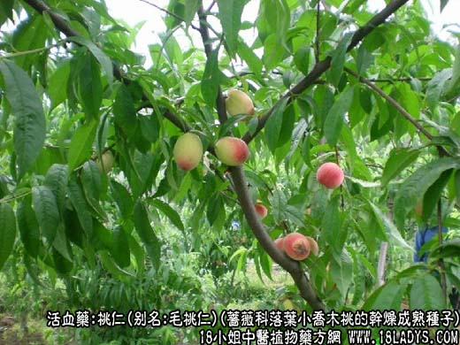
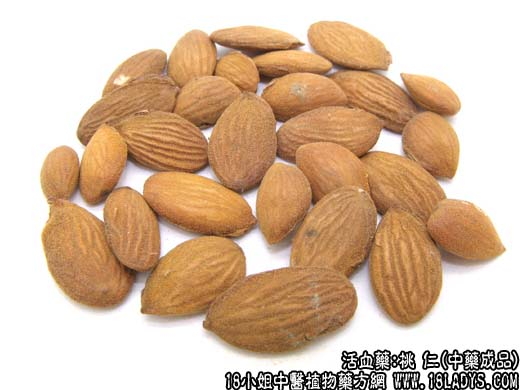
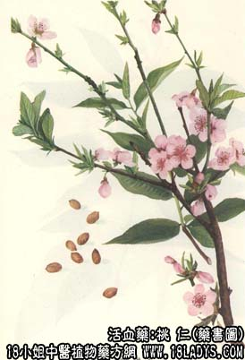

桃仁为较常用中药。始载《神农本草经》，列为下品。
别名：毛桃仁、扁桃仁、大桃仁
来源：为蔷薇科植物落叶小乔木桃的干燥成熟种子。栽培或野生。
产地：主产于华北、华东，西北、中南、西南地区。
性状鉴别：种子扁平长卵圆形，长1~1.5厘米，宽1厘米，厚3~5毫米。顶端尖中部膨大，基部钝圆而偏斜，边缘薄，表面黄棕色至红棕色，尖端一侧有一棱线状种脐，基部有台点，并自该处分散出多数棕色维管束脉纹。种皮薄而脆，易剥落，内有肥大子叶二片。富油质，胚根位于种子尖端部分。气微，味微苦。
以个大饱满，不泛油者为佳。
主要成分：含苦杏仁甙、苦杏仁酶、脂肪油和维生素B1。
功效与作用：破血行瘀，油燥滑肠。其作用为：镇痛、消炎、解毒、通便。又对小白鼠实验性结核病有疗效。
炮制：去净种皮，用时捣碎。
性味：苦、甘、平。
归经：入心、肝经。
功能：活血行瘀，润燥滑肠。
主治：经闭徵瘕，蓄血，腹痛，外伤瘀血及肠痈，肠燥便秘。
临床应用：为祛瘀常用药。
1、治血瘀经痛、经闭，表现有下腹胀痈、经行不畅、夹有瘀块、血色紫黑、经血量少，甚或数月不来，舌质紫，或舌边有瘀点，脉涩或沉缓。治宜化瘀与调经相结合，常用桃仁、红花配四物、方如桃红四物汤；如气虚弱较甚，用桃仁、红花配八珍汤(党参、白术、茯苓、甘草、当归、川芎、熟地、白芍)如气郁疼痛较明细，可在桃红四物汤基础上再加柴胡、牛膝、枳壳等，方如血府逐瘀汤。
2、治跌打损伤而致的瘀血滞留作痛，无论论新伤、旧伤、内伤、外伤，都可用桃仁祛瘀。一般配红花、当归、桑枝、赤芍。如属伤后瘀血内蓄而有热结便秘，胁腹疼痛，则需配大黄、天花粉、柴胡、当归等，方如复元活血汤。如属伤后寒凝瘀滞，关节肌肉酸疼、僵硬而怕冷，得温则痛减，须配桂枝、白芷、当归等。
3、治肠燥便必，尤其适于跌打外伤后瘀热内积引起的便秘，或病后、伤后卧床多、活动少，影响到肠管蠕动减慢所致的便秘，取其有脂肪油能润燥而滑肠，常配火麻仁、当归、生地、枳壳等。如便秘由温热病或跌打损伤后“蓄血”引起，表现有腹部胀满疼痛、谵语烦渴、脉沉涩，或有发热，要配大黄、芒硝等加强下瘀清热的作用，方如桃仁承气汤。此方破血下瘀之力较猛。如果想作用稍缓和些，也可用膈下逐瘀汤加大黄代之。
4、用于治肠痈(急性阑尾炎)和肺痈(肺脓疡)，桃仁作为辅助用药，故苇茎汤和肠痈方均用之，其作用可能为消炎、祛瘀、排脓。
此外，桃仁对散瘀结积聚有一定作用，可配桂枝、茯苓、丹皮、赤芍等制成桂枝茯苓丸，试用于治疗体积不大的子宫肌瘤和卵巢囊肿。
附：1、桃仁药性较纯，故在活血祛瘀剂中广泛应用，配破瘀药则破瘀，配行血药则行血，但单用力薄，一般不作为主药用；
2、桃仁与杏仁均能治便秘，但前人认为杏仁行气，便秘而见气郁者较适宜；桃仁行血，便必而见血滞者较适宜；并可参考脉象用药，脉浮属气宜用杏仁，脉沉属血宜用桃仁。以上区别可供参考，但实际上在一般情况下，桃仁与杏仁可以同用于治便必，也可以互相代用；
3、孕妇习惯上不用桃仁，如治便秘，可用火麻仁加川朴代。
用量：3~9g，不宜多服用时须打碎(即为桃仁泥)。
处方举例：1、桃红四物汤：桃仁9g(打碎)，红花6g，川芎4.，当归9g，白芍9g，熟地12g，水煎服。
2、血府逐瘀汤(<医林改错>)：桃仁9g(打碎)，红花9g，当归12g，生地15g，赤芍9g，川芎4.5g，柴胡6g，牛膝6g，枳壳6g，桔梗6g，甘草3g，水煎服。
3、复元活血汤(<医学发明>)：桃仁6g(打碎)，红花6g，柴胡6g，炮山甲1.5g，大黄(酒炒)3g，归尾6g，天花粉3g，甘草2.4g，水煎服。
4、桃仁承气汤(<伤寒论>)：桃仁9g(打碎)，桂枝6g，生大黄9g(后下)，元明粉6g(冲)，甘草3g，水煎服。
注：1、桃仁的栽培品个较大，野生品个较小而饱满，有些嫁接后的种子特别瘪瘦。
2、桃仁形状与杏仁近似，应注意区分。
3、未成熟的风落毛桃干燥后称“碧桃干”，中药用作固涩药，治盗汗、吐血、妊娠下血等。